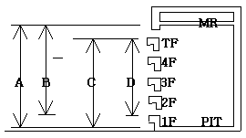
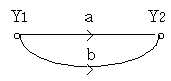
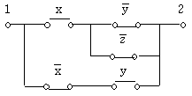
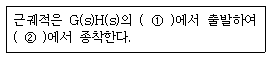
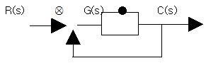
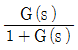
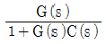
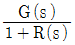
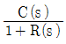
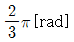

승강기산업기사 (2007-03-04 기출문제)
1과목: 승강기개론
1. 비상정지장치가 작동되어 카가 정지한 후의 바닥면의 수평도는 얼마 이내로 유지되어 있어야 하는가?(오류 신고가 접수된 문제입니다. 반드시 정답과 해설을 확인하시기 바랍니다.)
- 1/10
- 1/20
- 1/30
- 1/40
(정답률: 50%)

2. 에스컬레이터가 역운전되는 것을 방지하기 위한 안전장치로 볼 수 없는 것은?
- 구동체인 안전장치
- 조속기 장치
- 브레이크
- 비상정지스위치
(정답률: 39%)
3. 에스컬레이터의 브레이크 제동력에 대한 설명 중 올바른 것은?
- 승객이 탑승 했을 때는 상승시보다 하강시의 제동거리가 2배이다.
- 승객이 탑승한 경우는 하강시보다 상승시가 제동거리가 길다.
- 승객이 탑승한 경우는 하강시보다 상승시가 제동거리가 짧다.
- 승객이 탑승한 경우는 하강시와 상승시의 제동거리가 같다.
(정답률: 66%)
4. 장애인용 엘리베이터의 구조에 대하여 옳지 않은 것은?
- 문닫힘안전장치는 비접촉식으로 할 수 없다.
- 출입문 통과 유효폭을 0.8m 이상으로 하여야 한다.
- 승강장에 설치되는 장애인용 호출버튼은 바닥 면으로부터 0.8m ~ 1.2m 사이에 설치하면 된다.
- 휠체어 사용자용 조작반은 카 바닥면적이 1.4m × 1.4m 이상이면 진입방향의 좌측벽에 설치할 수 있다.
(정답률: 60%)
5. 피트바닥 하부를 통로 등으로 사용할 경우의 조건으로 가장 적절한 것은?
- 피트바닥을 견고한 목재로하여 흔들림이 없도록 고정시킨다.
- 균형추쪽에 완충기를 설치하여 비상정지에 대비하도록 한다.
- 피트바닥을 2중 슬라브로 하고, 균형추쪽에 비상정지장치를 설치한다.
- 균형추쪽 직하부에 두꺼운 벽을 설치하고, 비상정지장치를 설치한다.
(정답률: 62%)
6. 가변전압 가변주파수 제어방식에서 직류를 교류로 변경하는 인버터 제어방식을 무엇이라 하는가?
- PVM 시스템
- PSM 시스템
- PWM 시스템
- PAM 시스템
(정답률: 82%)
7. 에스컬레이터를 구분하는 방법으로 1200형과 800형은 무엇으로 구분한 것인가?
- 난간폭
- 속도
- 운반 인원수
- 감속기 종류
(정답률: 77%)
8. 유압 엘리베이터는 카가 하강할 때 전체 에너지가 열로되어 유압을 상승시키는데, 기동 빈도가 많을 때는 유온을 몇℃ 이하까지 유지시켜야 하는가?
- 50℃ 이하
- 60℃ 이하
- 70℃ 이하
- 80℃ 이하
(정답률: 75%)
9. 엘리베이터용 전동기의 용량을 결정하는 주된 요인이 아닌 것은?
- 행정거리
- 정격적재하중
- 정격속도
- 종합효율
(정답률: 80%)
10. 기계실의 바닥면부터 천장 또는 보의 하부까지의 수직거리는 특별한 경우를 제외하고 몇m 이상으로 하여야 하는가?(오류 신고가 접수된 문제입니다. 반드시 정답과 해설을 확인하시기 바랍니다.)
- 1
- 1.5
- 2
- 2.5
(정답률: 85%)
11. 승강로 출입구에 대한 설명으로 올바른 것은?
- 승객용은 카 1대에 대하여 1개 층에서 1개의 출입구만 설치할 수 있다.
- 승객·화물용은 카 1대에 대하여 1개 층에서 2개의 출입구를 설치할 수 있으며, 반드시 1개의 문은 닫은 상태에서 운전이 가능하여야 한다.
- 비상용을 제외하고는 카에는 2개의 출입구를 설치할 수 없다.
- 카에는 2개 이상의 출입구를 설치할 수 있으나, 2개의 문이 동시에 열려 통로로 사용 되어서는 아니된다.
(정답률: 85%)
12. 카가 어떤 이상 원인으로 감속되지 못하고 최상층 또는 최하층을 지나칠 경우 이를 검출하여 강제적으로 감속 및 정지시키는 장치로서 리미트 스위치 앞에 설치하는 것은?
- 화이널 리미트 스위치
- 종단층 강제감속장치
- 슬로다운 스위치
- 록 다운 비상정지장치
(정답률: 48%)
13. 승강기의 도어 시스템 종류를 분류 할 때 1S, 2S, 3S, 2짝문 CO, 4짝문 CO로 나타내는데 여기서 1S, 2S, 3S 표기 중 S는 무엇을 나타내는가?
- 측면 열기
- 중앙 열기
- 상하 열기
- 문짝수
(정답률: 86%)
14. 카의 실속도와 지령속도를 비교하여 사이리스터의 점호각을 바꿔 유도전동기의 속도를 제어하는 방식은?
- 워드레오나드 방식
- 정지레오나드 방식
- VVVF제어 방식
- 교류귀환전압제어 방식
(정답률: 60%)
15. 전속 하강 중인 승객용 엘리베이터의 카를 안전하게 감속 정지시키기 위한 브레이크의 제동 능력은 정격부하의 몇%까지 견디어야 하는가?
- 110
- 115
- 120
- 125
(정답률: 71%)
16. 다음 중 엘리베이터의 조작방식에 따른 분류에 속하지 않는 것은?
- 직접식
- 카 스위치 방식
- 신호 방식
- 단식 자동식
(정답률: 62%)
17. 가이드 레일의 기능을 설명한 것으로 옳지 않은 것은?
- 카의 기울임을 막아준다.
- 카의 승강로 평면내의 위치를 규제한다.
- 균형추의 승강로 평면내의 위치를 규제한다.
- 비상정지장치가 작동할 때 수평하중을 유지해 준다.
(정답률: 64%)
18. 교류 2단 속도제어 방식에서 크리프 시간이란 무엇인가?
- 저속 주행시간
- 고속 주행시간
- 속도 변환시간
- 가속 및 감속시간
(정답률: 78%)
19. 다음 중 직접식 유압 엘리베이터의 특징이 아닌 것은?
- 비상정지장치가 불필요하다.
- 부하에 의하 마루 침하가 적다.
- 실린더를 넣는 보호관이 필요없다.
- 승강로 소요평면 치수가 작고 구조가 간단하다.
(정답률: 69%)
20. 주로프에 사용되는 로프의 꼬임 방법 중 엘리베이터에 가장 많이 쓰이는 꼬임 방법은?
- 보통 Z 꼬임
- 보통 S 꼬임
- 랭 Z 꼬임
- 랭 S 꼬임
(정답률: 87%)
2과목: 승강기설계
21. P-6-CO 로 표시되는 엘리베이터의 숫자“6” 의 의미는?
- 로프 수
- 정지층 수
- 정원
- 승강로 레일 본수
(정답률: 78%)
22. 다음 그림 중 승강행정을 나타내는 것은?

- A
- B
- C
- D
(정답률: 66%)
23. 레일을 조이는 힘이 작동시부터 정지시까지 일정한 비상정지장치의 종류는?
- 즉시작동형
- 롤러식 작동형
- 플랙시블 가이드 크램프형
- 플랙시블 웨지 크램프형
(정답률: 63%)
24. 사이리스터(THYRISTOR)를 사용하여 교류를 직류로 변환한 후 전동기에 공급하고, 사이리스터의 점호각을 변경하여 직류전압을 바꿔 회전수를 조절하는 제어방식은?
- 워드 레오나드 제어방식
- 정지 레오나드 제어방식
- 교류 궤환 제어방식
- 가변전압 가변주파수 제어방식
(정답률: 71%)
25. 엘리베이터의 승객수가 20명, 일주시간이 30초 일 때 용량을 산정하는 방법으로 옿은것은?
- 180명
- 200명
- 220명
- 240명
(정답률: 60%)
26. 정격전류가 다른 여러 대의 엘리베이터에 대한 변압기의 용량을 산정하는 방법으로 옳은 것은?
- 정격전류별로 변압기 용량을 산정한 후 그 값을 모두 더하여 엘리베이터 대수로 나눈 값으로 한다.
- 정격전류별로 변압기 용량을 산정한 후 그 값을 모두 더한 값으로 한다.
- 정격전류별로 변압기 용량을 산정한 후 가장 높은 값으로 한다.
- 정격전류별로 변압기 용량을 산정한 후 가장 낮은 값으로 한다.
(정답률: 69%)
27. 로프 무게를 포함한 카의 전체 자중이 1140kg, 적재하중이 1000kg, 로프가 ø12X5본인 1:1 로핑인 경우 로프식 엘리베이터의 로프의 안전율은 약 얼마인가? (단, 로프의 파단력은 5990kg이다.)
- 11
- 12
- 14
- 15
(정답률: 33%)
28. 카 자중 1200kg, 정격하중 1000kg인 엘리베이터의 오버밸런스율을 40%로 취하면 균형추의 중량은 몇 kg 인가?
- 1480
- 1600
- 1720
- 1800
(정답률: 70%)
29. 가이드 레일을 설계할 때의 고려사항을 적당하지 않은 것은?
- 레일 부래킷은 카와 균형추 공용으로 할 수 있다.
- 중간 빔은 모두 양단 고정으로 보고 설계한다.
- 비상정지장치 작동시의 좌굴하중을 고려한다.
- 비상정지장치가 있는 경우에는 8K이하의 레일은 사용하지 않는다.
(정답률: 56%)
30. 엘리베이터의 내진 설계에 대한 설명으로 옳지 않은것은?
- 설계용 수평진도는 지역별로 다르다.
- 설계용 수직진도는 설계용 수평진도의 1/2로 한다.
- 설계용 수평 지진력의 작용점은 기기의 바닥으로 한다.
- 기계실의 기기에 대하여는 설계용 수직 지진력을 고려하여 지진력을 산정한다.
(정답률: 54%)
31. 전동기의 토크는 속도가 증가함에 따라 점차 커지고 최대토크에 달하면 급격히 작아져 동기속도로는 0이 된다. 이 최대 토크를 무엇이라 하는가?
- 최소 기동토크
- 풀업토크
- 전부하 토크
- 정동토크
(정답률: 38%)
32. 로프중량 90kg, 로프에 걸리는 하중 3000kg, 권상기 자중 2000kg인 엘리베이터 기계대에 가해지는 하중은 몇 kg인가?
- 5090
- 7180
- 8180
- 10180
(정답률: 40%)
33. 다음 중 V벨트의 특징으로 옳은 것은?
- 정동 회전비가 크다.
- 운전 소음이 크다.
- 미끄럼이 크다.
- 수명이 짧다.
(정답률: 68%)
34. 다음 중 도어에 대한 설명으로 옿은 것은?
- 공동주택용 엘리베이터에서는 카가 주행중에 저속의 도어를 손으로 억지로 여는데에 필요한 힘은 5kgf 이상 30kgf 이하이다.
- 공동주택용 엘리베이터에서는 카가 정지하고, 동력이 차단되었을 때 카가 저속시 도어를 손으로 억지로 여는데에 필요한 힘은 20kgf이상이다.
- 도어가 닫힐 때 도어에 끼어서 받는 아픔을 적게 하기 위한 도어의 개폐력은 5kgf이하이다.
- 도어 가이드 슈가 끼워져 있는 문턱 홈에 구멍을 뚫어 먼지가 쌓이지 않게 한다.
(정답률: 65%)
35. 브레이스 로드를 전후좌우 4개소에 적절히 설치하면 카 바닥 하중의 어느 정도까지를 균등하게 카틀의 상부에서 하부까지 전달할 수 있는가?
- 1/8
- 2/8
- 3/8
- 4/8
(정답률: 77%)
36. 엘리베이터 인버터 장치의 고차고조파 발생에 대한 대책으로 볼 수 없는것은?
- 엘리베이터 동력선과 통신기기, OA기기 등 약전기기의 전원선은 1m이상 분리한다.
- 엘리베이터용 변압기와 통신기기, OA기기 등 약전기기의 변압기는 분리할 필요가 있다.
- 엘리베이터의 접지선과 통신기기, OA기기 등 약전기기의 접지선은 분리할 필요가 없다.
- 엘리베이터의 동력선과 통신기기, OA기기 등 약전기기의 전원선을 분리할 수 없을 경우에는 동력선은 금속으로 배관한다.
(정답률: 68%)
37. 유압식 엘리베이터의 기계실의 유압 파워유니트, 기름탱크, 냉각장치 및 제어반은 특별한 경우를 제외하고 기둥 및 벽에서 수평거리로 몇 cm 이상 떨어져야 하는가?
- 20
- 30
- 50
- 60
(정답률: 50%)
38. 비상용 엘리베이터의 비상운전으로 볼 수 없는 것은?
- 비상호출운전
- 1차 소방운전
- 보수운전
- 2차 소방운전
(정답률: 81%)
39. 소형 엘리베이터에 관한 내용 중 옳지 않은것은?
- 단독주택에 설치된 승객용 엘리베이터로서 적재하중의 기준은 20kg 이하를 말한다.
- 단독주택에 설치된 승객용 엘리베이터로서 승강행정의 거리기중은 10m 이하로 한다.
- 주로프의 직경은 10mm 이상으로 하여야 한다.
- 주로프는 3가닥(권동식 또는 유압식 소형 엘리베이터는 2가닥) 이상으로 한다.
(정답률: 56%)
40. 승강로의 상부 여유거리와 피트깊이는 무엇에 따라 결정 되는가?
- 정격속도
- 정격하중
- 건물의 높이
- 승강기의 용도
(정답률: 74%)
3과목: 일반기계공학
41. 일명 자재이음이라고도 하고 두 축이 같은 평면상에 있으며 그 중심선이 어느 각도로 교차하고 있을 때, 사용되는 축 이음은?
- 마찰 클러치
- 올드햄 커플링
- 유니버셜 조인트
- 유체 커플링
(정답률: 68%)
42. 원심펌프에서 전효율이 80%, 송출유량이 2m3/min이다. 이 펌프의 수력효율이 90%, 기계효율 90% 일 때, 체적효율은 약 몇 % 인가?
- 92
- 95
- 97
- 99
(정답률: 43%)
43. 잇수 Z=24, 모듈 M=2의 표준 평 기어의 바깥지름은?
- 52
- 48
- 42
- 26
(정답률: 45%)
44. 볼 베어링의 호칭번호가 6008일 경우 안지름은?
- 8mm
- 16mm
- 20mm
- 40mm
(정답률: 58%)
45. 열처리 방법에서 일반적인 표면경화법이 아닌 것은?
- 저주파경화법
- 청화법
- 고체침탄법
- 질화법
(정답률: 61%)
46. Aℓ, Cu 및 Mg로 구성된 합금으로 인장강도가 크고 시효경화를 일으키는 고력(고강도)알루미늄 합금은?
- 두랄루민
- 로우엑스
- 실루민
- Y합금
(정답률: 68%)
47. 유량 30kgf/sec, 양정 75m 일 때 효율이 50%인 펌프로 물을 올리는 데 필요한 마력(PS)은?
- 60
- 15
- 75
- 80
(정답률: 34%)
48. 플라스틱 수지로 수축이 적고, 우수한 전기적 특성, 강한 물리적 성질을 가지고 있으며, 판재 제작, 용기성형, 페인트, 접착제 등으로 사용되는 열경화성 수지는?
- 에폭시 수지
- 스틸렌 수지
- 염화비닐 수지
- 아크릴 수지
(정답률: 74%)
49. 강구조물 재료에서 인장강도(σu), 허용응력(σa), 사용응력(σw)과의 관계로 다음 중 가장 적합한 것은?
- σu ＞ σa ≧ σw
- σu ＞ σw ≧ σa
- σw ＞ σu ≧ σa
- σw ≧ σa ＞ σu
(정답률: 75%)
50. 다음 중 스프링 재료가 갖추어야 할 가장 중요 한 성질은?
- 소성
- 탄성
- 가단성
- 전성
(정답률: 94%)
51. 표준 대기압을 나타낸 것 중 틀린 것은?
- 1atm
- 760mmHg
- 14.7PSI
- 10.0332kgf/cm2
(정답률: 67%)
52. 지름이 구간에 따라 일정하지 않은 봉의 최대 지름이 50㎜이고 최소지름이 25㎜이다. 5000kgf의 인장하중이 작용할 때, 봉에 작용하는 최대 인장 응력은 약 몇 kgf/mm2 인가?
- 2.55
- 10.2
- 20.4
- 40.8
(정답률: 38%)
53. 담금질 강의 냉각조건에 따른 변화조직이 아닌 것은?
- 마텐자이트
- 트루스타이트
- 소르바이트
- 시멘타이트
(정답률: 56%)
54. 결합용 나사의 리드각(λ)과 마찰각(ρ)의 관계에서 자립(self locking)상태를 바르게 표현한 것은?
- λ ≦ ρ
- λ = 0.5ρ
- λ ＞ ρ
- λ = 2ρ
(정답률: 51%)
55. 다음 중 선박에서 4대 주요구성부분이 아닌 것은?
- 주축대
- 베드
- 바이트
- 왕복대
(정답률: 79%)
56. 원통 마찰차 전동장치에서 원동차 지름이 180㎜ 이고 속도비가 1/3일 때 두 축의 중심거리는? (단, 미끄럼이 없는 것으로 가정한다.)
- 120㎜
- 180㎜
- 360㎜
- 420㎜
(정답률: 46%)
57. 쇼트 피닝에 관한 설명으로 틀린것은?
- 쇼트라는 작은 덩어리를 가공물에 분사한다.
- 피닝 효과는 열응력을 향상 시킨다.
- 자동차용 코일 또는 판 스프링 가공에 쓰인다.
- 두께가 큰 재료는 효과가 적고, 균열이 원인이 될 수 있다.
(정답률: 54%)
58. 창성법으로 기어의 이를 절삭하는 기어절삭용 전용 공작기계는?
- 셰이퍼
- 보링머신
- 브로우치
- 호빙머신
(정답률: 55%)
59. 자동차 제작 시 자동화가 용이해서 자동차 차체 용접에 가장 많이 사용되는 용접은?
- 산소 용접
- 아크 용접
- 레이저 용접
- 스폿 용접
(정답률: 72%)
60. 벨트 전동장치에서 유효장력을 P 라 할 때, 벨트에 작용하는 초기장력은 대략 P 의 몇 배로 하면 되는가? (단, 장력비 euθ=2 이고 초기 장력은 긴장축장력에 이완측 장력을 합산한 값의 반으로 한다.)
- 1.25 P
- 1.5 P
- 1.75 P
- 2 P
(정답률: 50%)
4과목: 전기제어공학
61. 다음 중 서보기구에 있어서의 제어량은?
- 유량
- 위치
- 주파수
- 전압
(정답률: 83%)
62. 최대 눈금 10㎃, 내부저항 6Ω의 전류계로 40㎃의 전류를 측정하려면 분류기의 저항은 몇 Ω 인가?
- 2
- 20
- 40
- 400
(정답률: 49%)
63. 플레밍의 오른손 법칙에 따라 기전력이 발생하는 원리를 이용한 기기는?
- 교류 발전기
- 교류 전동기
- 교류 정류기
- 교류 용접기
(정답률: 86%)
64. 전원 전압을 일정하게 유지하기 위해서 사용되는 소자는?
- 트라이액
- SCR
- 제너다이오드
- 터널다이오드
(정답률: 81%)
65. 시퀀스제어에 관한 설명 중 옳지 않은 것은?
- 조합 논리회로도 사용된다.
- 시간 지연요소도 사용된다.
- 유접점 계전기만 사용된다.
- 제어결과에 따라 조작이 자동적으로 이행된다.
(정답률: 81%)
66. 컴퓨터 제어의 아날로그 신호를 디지털 신호로 변환하는 과정에서, 아날로그 신호의 최대값을 M, 변환기의 bit수를 3이라 하면 양자화 오차의 최대 값은 얼마인가?
- M
- M/2
- M/7
- M/8
(정답률: 49%)
67. 그림과 같은 신호흐름선도의 선형방정식은?

- Y2=(a+2b)Y1
- Y2=(a+b)Y1
- Y2=(2a+b)Y1
- Y2=2(a+b)Y1
(정답률: 78%)
68. 직류전동기의 속도제어방법이 아닌 것은?
- 계자제어법
- 직렬저항법
- 병렬저항법
- 전압제어법
(정답률: 82%)
69. 그림과 같은 계전기 접점회로의 논리식은?

- (x+yz)(x+y)
- (xy+z)xy
- (x+y+z)(x+y)
- x(y+z)+xy
(정답률: 54%)
70. 다음( )안의 ①, ②에 알맞은 것은?

- ① 영점, ② 극점
- ① 극점, ② 영점
- ① 분지점, ② 극점
- ① 극점, ② 분지점
(정답률: 62%)
71. 직류 타여자전동기의 계자전류를 1/n로 하고 전기자 회로의 전압을 n배로 하면 속도는 어떻게 되는가?
- 1/n2
- 1/n
- 2n배
- n2배
(정답률: 40%)
72. 그림과 같은 피드백 블록선도의 전달함수는?





(정답률: 61%)
73. 다음 중 프로세스 제어에 속하는 것은?
- 장력
- 압력
- 전압
- 저항
(정답률: 49%)
74. 디지털 입력을 아날로그 출력으로 변환하는 D-A 컨버터를 선택하는데 있어서 중요한 요소가 아닌 것은?
- 정확도
- 시정수
- 정밀도
- 변환속도
(정답률: 62%)
75. 동일 규격의 축전지 2개를 병렬로 연결한 경우 옳은 것은?
- 전압과 용량이 각각 2배가 된다.
- 전압은 1/2배, 용량은 2배가 된다.
- 용량은 1/2배, 전압은 2배가 된다.
- 전압은 불변이고, 용량은 2배가 된다.
(정답률: 69%)
76. 120° 를 라디안[rad]으로 표시하면?
- π/3[rad]

- π/4[rad]
- π/6[rad]
(정답률: 72%)
77. 소형전동기의 절연저항 측정에 사용되는 것은?
- 브리지
- 검류계
- 메거
- 훅크온메타
(정답률: 92%)
78. 역률이 80%인 부하에 전압과 전류의 실효값이 각각 100V, 5A라고 할 때 무효전력[Var]은?
- 100
- 200
- 300
- 400
(정답률: 46%)
79. 저항 100Ω의 전열기에 4A의 전류를 흘렀을 때 소비되는 전력은 몇 W인가?
- 250
- 400
- 1600
- 3600
(정답률: 53%)
80. 저속이지만 큰 출력을 얻을 수 있고, 속응성이 빠른 조작기기는?
- 유압식 조작기기
- 공기압식 조작기기
- 전기식 조작기기
- 기계식 조작기기
(정답률: 83%)